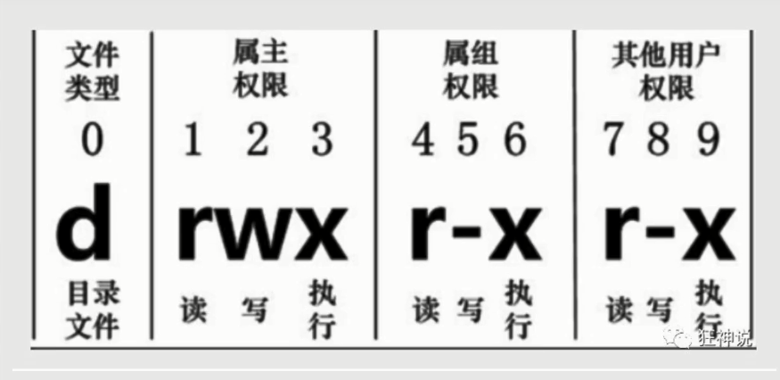

小迪和小越，哈哈
我的小窝
简洁至上
以 Markdown 为中心的项目结构，以最少的配置帮助你专注于写作。
Vue驱动
享受 Vue + webpack 的开发体验，在 Markdown 中使用 Vue 组件，同时可以使用 Vue 来开发自定义主题。
高性能
VuePress 为每个页面预渲染生成静态的 HTML，同时在页面被加载的时候，将作为 SPA 运行。
# linux关机重启命令
sync #将数据由内存同步到硬盘中
shutdown # 关机指令，你可以 man shutdown 来看一下帮助文档。例如，你可以运行如下命令关机
shutdown -h 10 #这个命令告诉大家，计算机将在10分钟后关机
shutdown -h now #立马关机
shutdown -h 20:25 #系统会在今天20:25关机
shutdown -h +10 # 10分钟后关机
shutdown -r now # 系统立马重启
shutdown -r +10 # 系统10分钟后重启
reboot #就是重启 等同于 shutdown -r now
halt #关闭系统 等同于shutdown -h now 和poweroff
2
3
4
5
6
7
8
9
10
11
12
13
14
15
16
17
18
19
# 系统目录结构
1、 一切皆文件
2、根目录 / ，所有的文件都挂载在这个节点下
ls /

以下是对这些目录的解释
- /bin: bin是binary的缩写，这个目录存放着最经常使用的命令。
- /boot:这里存放的是启动Linux时使用的一些核心文件，包括一些连接文件以及镜像文件。
- /dev: dev是Device(设备)的缩写，存放的是Linux的外部设备，在Linux中访问设备的方式和访问文件的方式是相同的。
- /etc:这个目录用来存放所有的系统管理所需要的配置文件和子目录。
- /home：用户的主目录，在Linux中，每个用户都有一个自己的目录，一般该目录名是以用户的账户命名的。
- /lib:这个目录里存放着系统最基本的动态链接共享库，其作用类似于windows里的dll文件。
- /lost+found:这个目录一般情况下是空的，当系统非法关机后，这里就存放了一些文件。
- /media:linux系统会自动识别一些设备，例如U盘，光驱等等，当识别后，linux会把识别的设备挂载到这个目录下。
- /mnt:系统提供该目录是为了让用户临时挂载别的文件系统的，我们可以将光驱挂载到/mnt/上，然后进行该目录就可以查看光驱里面的内容。(我们后面会把一些本地文件挂载在这个目录下)
- /opt:这是给主机额外安装软件所摆放的目录。比如你安装一个Oracle数据库则就可以放在这个目录下，默认是空的。
- /root:该目录为系统管理员，也称作超级权限者的用户主目录
- /usr:这是一个非常重要的目录，用户的很多应用程序和文件都放在这个目录下，类似于windows下的program files目录
- /tmp:这个目录是用来存放一些临时文件的。用完即丢的文件，可以放在这个目录下，如安装包。
- /var:这个目录中存放着在不断扩充着的东西，我们习惯将那些经常被修改的目录放在这个目录下。包括各种日志文件。
# 常用的基本命令
# 目录管理
cd:change directory 切换目录
./：当前目录
..：上级目录
ls(列出目录！)
在Linux中ls可能是最常常被使用的。
-a 参数：all ,查看全部的文件，包括隐藏文件
-l 参数：列出所有的文件，包含文件的属性和权限，不显示隐藏文件
所有Linux参数可以组合使用 ls -al
cd ~ ： 回到用户目录。
pwd显示当前用户所在的目录。
pwd 是 Print Working Directory 的缩写，也就是显示目前所在目录的命令。
wd@wd-PC:~/Desktop$ pwd
/home/wd/Desktop
wd@wd-PC:~/Desktop$
2
3
mkdir

连续递归创建目录用 mkdir -p test/test1

wd@wd-PC:~/Desktop$ pwd
/home/wd/Desktop
wd@wd-PC:~/Desktop$ mkdir test
wd@wd-PC:~/Desktop$ ls
jdk-8u251-linux-x64.rpm test
wd@wd-PC:~/Desktop$ rmdir test
wd@wd-PC:~/Desktop$ mkdir test/test1
mkdir: 无法创建目录"test/test1": 没有那个文件或目录
wd@wd-PC:~/Desktop$ mkdir -p test/test1
wd@wd-PC:~/Desktop$ cd test
wd@wd-PC:~/Desktop/test$ ls
test1
wd@wd-PC:~/Desktop/test$
2
3
4
5
6
7
8
9
10
11
12
13
rmdir 删除目录
rmdir仅能删除空的目录，如果下面存在文件，需要先删除文件，递归删除多个目录-p参数即可。
cp(复制文件或者目录)
cp 原来的地方 新的地方！
cp test.txt test 将test.txt文件复制到test目录里。
rm(移除文件或者目录！)
-f (false) 忽略不存在的文件，不会出现警告，强制删除！
-r 递归删除目录！
-i 互动，删除时询问是否删除。
rm -rf / 系统中所有文件都被删除，删库跑路就是这么操作的。
mv 移动文件或者目录！ 重命名文件
-f 强制
-u 只替换已经更新过的文件
mv eee.doc ddd.doc #重命名文件
mv ddd.doc .. #移动文件，将ddd.doc 移动到上层目录
mv test test1 #重命名文件夹
2
3
# 基本属性
在Linux中第一个字符代表这个文件是目录、文件或者链接文件等等
- ==当为[d]则是目录==
- ==当为[-]则是文件==
- ==若是[l]则表示为链接文档(link file)==
- 若是[b]则表示为装置文件里面的可供存储的接口设备(可随机存储装置)
- 若是[c]则表示为装置文件里面的串行端口设备，例如键盘 鼠标(一次性读取装置)
接下来的字符中，以三个为一组，且均为[rwx]的三个参数的组合。
其中，[r]代表可读(read),[w]代表可写(write),[x]代表可执行(execute).
要注意的是，这三个权限的位置不会改变，如果没有权限，就会出现减号[-]而已。
每个文件属性由左边第一部分的10个字符来确定(如下图)：

从左至右用0-9这些数字来表示。
第0位确定文件类型，第1-3位确定属主(该文件的所有者)拥有该文件的权限。第4-6位确定属组(所有者的同组用户)拥有该文件的权限，第7-9位确定其他用户拥有该文件的权限。
其中：
第1、4、7位表示读权限，如果用"r"字符表示，则有读权限，如果用"-"字符表示，则没有读权限；
第2、5、8位表示写权限，如果用"w"字符表示，则有写权限，如果用"-"字符表示没有写权限；
第3、6、9位表示可执行权限，如果用"x"字符表示，则有执行权限，如果用"-"字符表示，则没有执行权限。
对于文件来说，它都有一个特定的所有者，也就是对该文件具有所有权的用户。
同时，在Linux系统中，用户是按组分类的，一个用户属于一个或多个组。
文件所有者以外的用户又可以分为文件所有者的同组用户和其他用户。
因此，Linux系统按文件所有者、文件所有者同组用户和其他用户来规定了不同的文件访问权限。
在以上实例中，boot 文件是一个目录文件，属主和属组都为 root。


修改文件属性
1、chgrp：更改文件属组
chgrp [-R] 属组名 文件名
-R：递归更改文件属组，就是在更改某个目录文件的属组时，如果加上-R的参数，那么该目录下的所有文件的属组都会更改。
2、chown：更改文件属主，也可以同时更改文件属组
chown [–R] 属主名 文件名
chown [-R] 属主名：属组名 文件名
2
==3、chmod：更改文件9个属性（必须要掌握）==
你没有权限操作此文件
chmod [-R] xyz 文件或目录
Linux文件属性有两种设置方法，一种是数字(常用的是数字)，一种是符号。
Linux文件的基本权限就有九个，分别是owner/group/others三种身份各有自己的read/write/execute权限。
先复习一下刚刚上面提到的数据：文件的权限字符为：『-rwxrwxrwx』， 这九个权限是三个三个一组的！其中，我们可以使用数字来代表各个权限，各权限的分数对照表如下：
r:4 w:2 x:1
可读可写不可执行 rw- 6
可读可写可执行 rwx 7
chmod 777 文件名 文件赋予所有用户可读可写可执行
2
3
4
wd@wd-PC:~/Desktop$ ls -l
总用量 175288
-rw-r--r-- 1 wd wd 15360 5月 18 17:32 ddd.doc
-rwxrw-rw- 1 wd wd 179472367 5月 17 23:03 jdk-8u251-linux-x64.rpm
drwxr-xr-x 2 wd wd 4096 5月 18 17:37 test1
wd@wd-PC:~/Desktop$ chmod 777 test1
wd@wd-PC:~/Desktop$ ls -l
总用量 175288
-rw-r--r-- 1 wd wd 15360 5月 18 17:32 ddd.doc
-rwxrw-rw- 1 wd wd 179472367 5月 17 23:03 jdk-8u251-linux-x64.rpm
drwxrwxrwx 2 wd wd 4096 5月 18 17:37 test1
2
3
4
5
6
7
8
9
10
11
12
每种身份(owner/group/others)各自的三个权限(r/w/x)分数是需要累加的，例如当权限为：[-rwxrwx---] 分数则是：
- owner = rwx = 4+2+1 = 7
- group = rwx = 4+2+1 = 7
- others= --- = 0+0+0 = 0
chmod 770 filename
可以自己下去多进行测试！
# 文件内容查看
概述
Linux系统中使用以下命令来查看文件的内容：
- ==cat 由第一行开始显示文件内容==
- tac 从最后一行开始显示，可以看出 tac 是 cat 的倒着写！
- ==nl 显示的时候，顺道输出行号！看代码的时候，希望显示行号。==
wd@wd-PC:~/Desktop$ nl JDK环境变量.txt
1 JAVA_HOME JDK��װĿ¼
2 Path %JAVA_HOME%\bin;%JAVA_HOME%\jre\bin;
3 CLASSPATH .;%JAVA_HOME%\lib;%JAVA_HOME%\lib\tools.jar
2
3
4
5
- ==more 一页一页的显示文件内容(空格代表翻页，etner代表向下看一行)==
:f 显示行号
- ==less 与 more 类似，但是比 more 更好的是，他可以往前翻页！（空格向下翻页，上下键代表翻动页面！退出q命令 ，查找字符串(向下查询)： /要查找的字符串 查找字符串(向上查询) ?要查找的字符串，n继续搜寻下一个，N搜寻上一个）==
- head 只看头几行
查看前20行：head -n 20 ss.txt
- tail 只看尾巴几行
查看后20行：tail -n 20 ss.txt
==linux下 ifconfig命令查看网络配置==
拓展：Linux链接的概念(了解即可)
Linux的链接分为两种：硬链接和软链接
硬链接：A----B,假设B是A的硬链接，那么它们两个指向了同一个文件，允许一个文件拥有多个路径，用户可以通过这种机制建立硬链接到一些重要的文件上，防止误删
软链接：类似Windows下的快捷方式，删除了源文件，快捷方式也访问不了了
创建链接：ln命令
ln f1 f2 #创建f1文件的硬链接f2
ln -s f1 f3 #创建f1文件的软链接(符号链接)f3
2
touch命令创建文件
touch f1 #创建f1文件
echo输入字符串
echo "I love kuangshen" >>f1 #向f1文件中输入一句字符串
wd@wd-PC:~/Desktop$ touch f1 #创建f1文件
wd@wd-PC:~/Desktop$ ln f1 f2 #创建f1文件的硬链接f2
wd@wd-PC:~/Desktop$ ln -s f1 f3 #创建f1文件的软链接(符号链接)f3
wd@wd-PC:~/Desktop$ echo "I love kuangshen" >>f1 #向f1文件中输入一句字符串
wd@wd-PC:~/Desktop$ cat f1 # 查看f1的内容
I love kuangshen
wd@wd-PC:~/Desktop$ cat f2 #查看f2的内容
I love kuangshen
wd@wd-PC:~/Desktop$ cat f3 #查看f3的内容
I love kuangshen
wd@wd-PC:~/Desktop$ rm f1 #删除f1文件
wd@wd-PC:~/Desktop$ cat f2 #查看f2的内容，可以看到
I love kuangshen
wd@wd-PC:~/Desktop$ cat f3 #查看f3的内容 ，没有那个文件或目录
cat: f3: 没有那个文件或目录
2
3
4
5
6
7
8
9
10
11
12
13
14
15
# Vim编辑器
什么是Vim编辑器
Vim是从 vi 发展出来的一个文本编辑器。代码补完、编译及错误跳转等方便编程的功能特别丰富，在程序员中被广泛使用。尤其是Linux中必须要会使用Vim==（查看内容，编辑内容，保存内容）==
简单的来说， vi 是老式的字处理器，不过功能已经很齐全了，但是还是有可以进步的地方。
vim 则可以说是程序开发者的一项很好用的工具。
所有的 Unix Like 系统都会内建 vi 文书编辑器，其他的文书编辑器则不一定会存在。
连 vim 的官方网站 (http://www.vim.org) 自己也说 vim 是一个程序开发工具而不是文字处理软件。
vim 键盘图：
三种使用模式
基本上 vi/vim 共分为三种模式，分别是命令模式（Command mode），输入模式（Insert mode）和底线命令模式（Last line mode）。这三种模式的作用分别是：
命令模式：
用户刚刚启动 vi/vim，便进入了命令模式。
此状态下敲击键盘动作会被Vim识别为命令，而非输入字符。比如我们此时按下i，并不会输入一个字符，i被当作了一个命令。
以下是常用的几个命令：
- i 切换到输入模式，以输入字符。
- x 删除当前光标所在处的字符。
- : 切换到底线命令模式，以在最底一行输入命令。如果是编辑模式，需要先退出编辑模式！Esc
若想要编辑文本：启动Vim，进入了命令模式，按下i，切换到输入模式。
命令模式只有一些最基本的命令，因此仍要依靠底线命令模式输入更多命令。
输入模式：
在命令模式下按下i就进入了输入模式。
在输入模式中，可以使用以下按键：
- 字符按键以及Shift组合，输入字符
- ENTER，回车键，换行
- BACK SPACE，退格键，删除光标前一个字符
- DEL，删除键，删除光标后一个字符
- 方向键，在文本中移动光标
- HOME/END，移动光标到行首/行尾
- Page Up/Page Down，上/下翻页
- Insert，切换光标为输入/替换模式，光标将变成竖线/下划线
- ESC，退出输入模式，切换到命令模式
底线命令模式
在命令模式下按下:（英文冒号）就进入了底线命令模式。光标就移动到了最底下，就可以在这里输入一些底线命令了。
底线命令模式可以输入单个或多个字符的命令，可用的命令非常多。
在底线命令模式中，基本的命令有（已经省略了冒号）： wq保存并退出
- q 退出程序
- w 保存文件
由下图可知，vim也可以新建文件

按ESC键可随时退出底线命令模式。
简单的说，我们可以将这三个模式想成底下的图标来表示：
Vim 按键说明
除了上面简易范例的 i, Esc, :wq 之外，其实 vim 还有非常多的按键可以使用。
第一部分：一般模式可用的光标移动、复制粘贴、搜索替换等
| 移动光标的方法 | |
|---|---|
| h 或 向左箭头键(←) | 光标向左移动一个字符 |
| j 或 向下箭头键(↓) | 光标向下移动一个字符 |
| k 或 向上箭头键(↑) | 光标向上移动一个字符 |
| l 或 向右箭头键(→) | 光标向右移动一个字符 |
| [Ctrl] + [f] | 屏幕『向下』移动一页，相当于 [Page Down]按键 (常用) |
| [Ctrl] + [b] | 屏幕『向上』移动一页，相当于 [Page Up] 按键 (常用) |
| [Ctrl] + [d] | 屏幕『向下』移动半页 |
| [Ctrl] + [u] | 屏幕『向上』移动半页 |
| + | 光标移动到非空格符的下一行 |
| - | 光标移动到非空格符的上一行 |
| 数字+< space> | 那个 n 表示『数字』，例如 20 。按下数字后再按空格键，光标会向右移动这一行的 n 个字符。 |
| 0 或功能键[Home] | 这是数字『 0 』：移动到这一行的最前面字符处 (常用) |
| $ 或功能键[End] | 移动到这一行的最后面字符处(常用) |
| H | 光标移动到这个屏幕的最上方那一行的第一个字符 |
| M | 光标移动到这个屏幕的中央那一行的第一个字符 |
| L | 光标移动到这个屏幕的最下方那一行的第一个字符 |
| G | 移动到这个档案的最后一行(常用) |
| nG | n 为数字。移动到这个档案的第 n 行。例如 20G 则会移动到这个档案的第 20 行(可配合 :set nu) |
| gg | 移动到这个档案的第一行，相当于 1G 啊！(常用) |
| n< Enter> | n 为数字。光标向下移动 n 行(常用) |
| 搜索替换 | |
|---|---|
| /word | 向光标之下寻找一个名称为 word 的字符串。例如要在档案内搜寻 vbird 这个字符串，就输入 /vbird 即可！(常用) |
| ?word | 向光标之上寻找一个字符串名称为 word 的字符串。 |
| n | 这个 n 是英文按键。代表重复前一个搜寻的动作。举例来说， 如果刚刚我们执行 /vbird 去向下搜寻 vbird 这个字符串，则按下 n 后，会向下继续搜寻下一个名称为 vbird 的字符串。如果是执行 ?vbird 的话，那么按下 n 则会向上继续搜寻名称为 vbird 的字符串！ |
| N | 这个 N 是英文按键。与 n 刚好相反，为『反向』进行前一个搜寻动作。例如 /vbird 后，按下 N 则表示『向上』搜寻 vbird 。 |
| 删除、复制与粘贴 | |
|---|---|
| x, X | 在一行字当中，x 为向后删除一个字符 (相当于 [del] 按键)， X 为向前删除一个字符(相当于 [backspace] 亦即是退格键) (常用) |
| nx | n 为数字，连续向后删除 n 个字符。举例来说，我要连续删除 10 个字符， 『10x』。 |
| dd | 删除游标所在的那一整行(常用) |
| ndd | n 为数字。删除光标所在的向下 n 行，例如 20dd 则是删除 20 行 (常用) |
| d1G | 删除光标所在到第一行的所有数据 |
| dG | 删除光标所在到最后一行的所有数据 |
| d$ | 删除游标所在处，到该行的最后一个字符 |
| d0 | 那个是数字的 0 ，删除游标所在处，到该行的最前面一个字符 |
| yy | 复制游标所在的那一行(常用) |
| nyy | n 为数字。复制光标所在的向下 n 行，例如 20yy 则是复制 20 行(常用) |
| y1G | 复制游标所在行到第一行的所有数据 |
| yG | 复制游标所在行到最后一行的所有数据 |
| y0 | 复制光标所在的那个字符到该行行首的所有数据 |
| y$ | 复制光标所在的那个字符到该行行尾的所有数据 |
| p, P | p 为将已复制的数据在光标下一行贴上，P 则为贴在游标上一行！举例来说，我目前光标在第 20 行，且已经复制了 10 行数据。则按下 p 后， 那 10 行数据会贴在原本的 20 行之后，亦即由 21 行开始贴。但如果是按下 P 呢？那么原本的第 20 行会被推到变成 30 行。(常用) |
| J | 将光标所在行与下一行的数据结合成同一行 |
| c | 重复删除多个数据，例如向下删除 10 行，[ 10cj ] |
| u | 复原前一个动作。(常用) |
| [Ctrl]+r | 重做上一个动作。(常用) |
第二部分：一般模式切换到编辑模式的可用的按钮说明
| 进入输入或取代的编辑模式 | |
|---|---|
| i, I | 进入输入模式(Insert mode)：i 为『从目前光标所在处输入』， I 为『在目前所在行的第一个非空格符处开始输入』。(常用) |
| a, A | 进入输入模式(Insert mode)：a 为『从目前光标所在的下一个字符处开始输入』， A 为『从光标所在行的最后一个字符处开始输入』。(常用) |
| o, O | 进入输入模式(Insert mode)：这是英文字母 o 的大小写。o 为『在目前光标所在的下一行处输入新的一行』；O 为在目前光标所在处的上一行输入新的一行！(常用) |
| r, R | 进入取代模式(Replace mode)：r 只会取代光标所在的那一个字符一次；R会一直取代光标所在的文字，直到按下 ESC 为止；(常用) |
| [Esc] | 退出编辑模式，回到一般模式中(常用) |
第三部分：一般模式切换到指令行模式的可用的按钮说明
| 指令行的储存、离开等指令 | |
|---|---|
| :w | 将编辑的数据写入硬盘档案中(常用) |
| :w! | 若文件属性为『只读』时，强制写入该档案。不过，到底能不能写入， 还是跟你对该档案的档案权限有关啊！ |
| :q | 离开 vi (常用) |
| :q! | 若曾修改过档案，又不想储存，使用 ! 为强制离开不储存档案。 |
| 注意一下啊，那个惊叹号 (!) 在 vi 当中，常常具有『强制』的意思～ | |
| :wq | 储存后离开，若为 :wq! 则为强制储存后离开 (常用) |
| ZZ | 这是大写的 Z 喔！若档案没有更动，则不储存离开，若档案已经被更动过，则储存后离开！ |
| :w [filename] | 将编辑的数据储存成另一个档案（类似另存新档） |
| :r [filename] | 在编辑的数据中，读入另一个档案的数据。亦即将 『filename』 这个档案内容加到游标所在行后面 |
| :n1,n2 w [filename] | 将 n1 到 n2 的内容储存成 filename 这个档案。 |
| :! command | 暂时离开 vi 到指令行模式下执行 command 的显示结果！例如 『:! ls /home』即可在 vi 当中看 /home 底下以 ls 输出的档案信息！ |
| ==:set nu == 设置行号 | 显示行号，设定之后，会在每一行的前缀显示该行的行号 |
| :set nonu | 与 set nu 相反，为取消行号！ |
# 账号管理
useradd命令 添加用户
useradd -选项 用户名
-m:自动创建这个用户的主目录 /home/di
-G：给用户分配组
root@wd-PC:/home/wd/Desktop# useradd -m di 创建一个账户di
删除用户userdel
userdel -r di 删除用户的时候将它的目录一并删掉
修改用户 usermod
usermod -d /home/233 di
查看配置文件
cat /etc/passwd
配置文件内容di:x:1001:1001::/home/233:
2
3
4
5
切换用户
1.切换用户的命令为：su username 【username是你的用户名哦】
2.从普通用户切换到root用户，还可以使用命令：sudo su
3.在终端输入exit或logout或使用快捷方式ctrl+d，可以退回到原来用户，其实ctrl+d也是执行的exit命令

4.在切换用户时，如果想在切换用户之后使用新用户的工作环境，可以在su和username之间加-，例如：【su - root】
$表示普通用户
#表示超级用户，也就是root用户
修改主机名后要重新连接才能生效

sudo passwd root 设置root账户密码
su root 以root账户登录，需要输入root账户密码
用户的密码设置问题
我们一般通过root创建用户的时候，要配置密码
Linux上输入密码是不会显示的，你正常输入就可以了，并不是系统的问题
如果是超级用户的话
passwd username
如果是普通用户的话
passwd
锁定账户
root,比如张三辞职了，冻结这个账号，一旦冻结，这个人就登录不上系统了
passwd -l di -l lock锁定的意思 #锁定之后这个用户就不能登录了
passwd -d di #清空密码，用户没有密码了，就不用登录了
2
# 用户组管理
创建一个用户组 groupadd
root@wd-PC:/home/wd/Desktop# groupadd xiaodi
root@wd-PC:/home/wd/Desktop# cat /etc/group
xiaodi:x:1002:
创建完用户组后可以得到一个组的id,这个id是可以指定的(-g 520),如果不指定就是自增1
root@wd-PC:/home/wd/Desktop# groupadd -g 520 xiaodi2
root@wd-PC:/home/wd/Desktop# cat /etc/group
xiaodi2:x:520:
2
3
4
5
6
7
8
删除一个用户组 groupdel
root@wd-PC:/home/wd/Desktop# groupdel xiaodi2
root@wd-PC:/home/wd/Desktop# cat /etc/group 查看配置文件发现xiaodi2用户组已经被删除
2
3
修改用户组 groupmod
-g 修改用户组id
-n 修改用户组名字
拓展：文件的查看(了解即可)
/etc/passwd
用户名:口令(不可见,为x):用户标识号:组标识号:注释性描述:主目录:登录Shell
root :x :0 :0 :root :/root:/bin/bash
2
这个文件中的每一行都代表一个用户，我们可以从这里看出这个用户的主目录在哪里，可以看到属于哪一个组
登录口令：把真正的加密后的用户口令字存放到/etc/shadow文件中，保证我们的密码的安全性
用户组的所有信息都存放在/etc/group文件中
# 磁盘管理
df(列出文件系统整体的磁盘使用量) du(检查磁盘空间使用量)
df
使用df -h 可以以M或者G的形式查看
du
du
du -h
Mac或者想使用Linux挂载我们的一些本地磁盘或者文件
挂载：mount
mount /dev/wd /mnt/wd
将外部设备wd 挂载到mnt目录下，来实现访问
2
卸载: umount -f 强制卸载
# 进程管理
对于我们开发人员来说，其实Linux更多偏向于使用即可！
基本概念
- 在Linux中，每一个程序都是有自己的一个进程，每一个进程都有一个id号
- 每一个进程呢，都会有一个父进程
- 进程可以有两种存在方式：前台！后台运行
- 一般的话服务都是后台运行的，基本的程序都是前台运行的！
命令
ps 查看当前系统中正在执行的各种进程的信息！
ps -xx：
- -a:显示当前终端运行的所有的进程信息
- -u:以用户的信息显示进程
- -x:显示后台运行进程的参数
# ps -aux 查看所有的进程
ps -aux|grep mysql
# | 在Linux中这个叫做管道符 A|B
# grep 查找文件中所有符合条件的字符串
2
3
4
对于我们来说，这里目前只需要记住一个命令即可 ps -xx|grep 进程名字 过滤进程信息
ps -ef 可以查看到父进程的信息
ps -ef|grep mysql #看父进程我们一般可以通过目录树结构来查看
pstree -pu
-p 显示父进程id
-u 显示用户组
2
3
4
结束进程：杀掉进程，等价于windows结束任务
kill -9 进程的id
但是啊，我们平时写的一个Java代码死循环了，可以选择结束进程！杀进程！
kill -9 进程的id 表示强制结束该进程
查看帮助信息
ps -help
man ps
# 环境安装
安装软件一般有三种方式：
- rpm(jdk:在线发布一个Springboot项目)
- 解压缩(tomcat,启动并通过外网访问)
- yum在线安装(docker:直接安装运行跑起来docker就可以了)